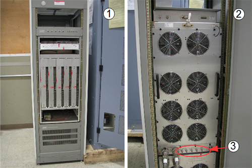
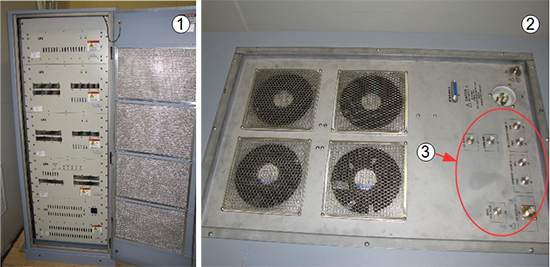
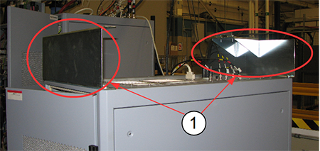
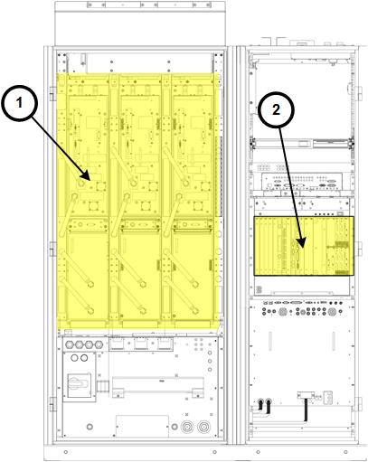
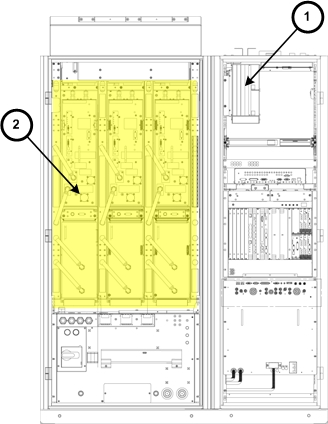
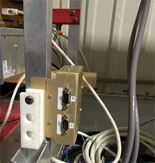
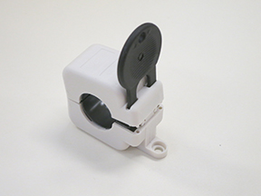
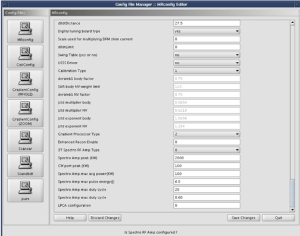

- 00000018WIA30A41E20GYZ
- id_131064435.21
- Jan 7, 2025, 8:24:53 PM
Multi-Nuclear Spectroscopy (MNS) installation and upgrade (3.0T)
Prerequisites
| Personnel requirements | |||
|---|---|---|---|
| Required persons | Preliminary requirements | Procedure | Finalization |
| 2 | - | 9 hours | - |
| Tools and test equipment | |||
|---|---|---|---|
| Item | Quantity | Part number | Manufacturer |
| Nonmagnetic Tool Kit | 1 | 2385097 | - |
| Digital Voltmeter (DVM) with Jumper Leads | 1 | 46-194427P284 | - |
| Red Warning LOTO Tag | 2 | 46-194427P322 | - |
| 1 Inch Multi-Locking Device (if multiple service personnel are involved) | 1 | 46-194427P313 | - |
| Red LOTO Personal Lock Wrap | 2 | 2393068 | - |
| Brass Master Padlock with Brass Shackle | 2 | 46-194427P320 | - |
| Consumables | |||
|---|---|---|---|
| Item | Quantity | Part number | Manufacturer |
| Cable Tie Wraps | As needed | - | - |
| Replacement parts | |||
|---|---|---|---|
| Item | Quantity | Part number | Manufacturer |
| Ferrite Toroid Key | 1 | - | - |
| Required conditions |
|---|
| Remove any twists and kinks from the cabling. When routing cables, avoid circular loop bundles. Use “figure eight” coils of less than 2m (6 ft) in diameter. |
| Allow 1m (3 ft) of cable slack at the entrance to the cabinets. |
| If the amplifier cabinet is an AMT/Herley, move the MNS cabinet door down using the adjustable hinges before positioning the cabinet. With an opening at the top of the cabinet, the cables can be routed up and out of the MNS cabinet. |
| Safety | ||||
|---|---|---|---|---|
| ||||
About this task
Note MNS scans can only be executed on the curved table. The flat or GEM table is not compatible with the MNS option.
There are two individual amplifiers that are utilized for the spectroscopy option:
- 8 kW AMT/Herley amplifier – This is the original amplifier and is easily identified by cables connecting to the rear of the cabinet.
Figure 1. 8 kW AMT/Herley cabinet – front and back 
Item Description 1 Front of 8 kW AMT/Herley cabinet 2 Back of 8 kW AMT/Herley cabinet 3 Cable connections - CPC MNS amplifier – This is a new amplifier introduced in summer of 2014. Cables connect to the top of the cabinet for this amplifier.Note The CPC MNS amplifier is only compatible with DV systems MR750, MR750w and Architect T. It is not compatible with HD systems.
Figure 2. CPC cabinet – front and top 
Item Description 1 Front of CPC cabinet 2 Top of CPC cabinet 3 Cable connections Two hoist support brackets are in the bottom of the CPC cabinet crate. Install them on the top of the cabinet so that they do not get lost.
Figure 3. CPC cabinet – hoist support brackets 
1 Hoist support brackets
System power shutdown
Procedure
DANGER 
To prevent fatal electric shock, disconnect the power from the PDU before doing the following procedures.Notice - Apply PGR PDU/Gradient Subsystem LOTO. See Applying LOTO - PGR Power Distribution Unit (PDU)/Gradient Subsystem.
Installing RF detector boards, broadband (BB) AIF board, and cables
About this task
- Amp IF Board: A quantity of 1 BB Amp IF Board is required for the MNS option, either part 5250032 (non-RoHS) or 6250112 (RoHS).
- RF Detector Boards: A quantity of 2 RF Detector boards is required for the MNS option. Systems with a Dual Drive RF Amplifier will already have the boards installed. Systems with a Single Drive RF Amplifier will require the installation of two additional RF Detector Boards. It is required and important that the part number of the RF Detector Boards being installed match the part number of the other RF Detector Boards already installed [for narrowband (NB)] in the CAM (or ASC) chassis. If the CAM (or ASC) chassis has RF Detector boards with 5250034, then the RF Detector Boards for MNS option must also be 5250034. If the CAM (or ASC) chassis has RF Detector boards with 6250264, then RF Detector Boards for MNS option must also be 6250264.
Procedure
Installing MNS power connections
About this task
Procedure
Installing MNS in CAM or ICE chassis
Installing MNS hardware in PGR cabinet with XG2 and CAM
About this task

| Item | Description |
|---|---|
| 1 | XG2 gradient driver hardware |
| 2 | CAM |
Procedure
Installing MNS hardware in PGR cabinet with XGD
About this task
On systems released before DV VCP (contains Cronus chassis, item 1 below), the ERF board must be installed into the CAM chassis.Figure 22. Cabinet with previous hardware (pre-DV VCP)

| Item | Description |
|---|---|
| 1 | Cronus chassis |
| 2 | XGD gradient driver hardware |
Procedure
Installing broadband exciter module (5300204-2 or 5600016-4) in CAM or ICE configuration
Procedure
- From the front of the cabinet, insert the module under the NB
exciter in the PEN cabinet. Route these cables to the rear of the
cabinet.
Figure 24. BB exciter module location 
Item Description Item Description A CAN fiber-optic board (CFB) Note CFB is not applicable for DPP configurations.C MNS BB exciter board B NB exciter board D Thumbscrews securing module to cabinet frame
Repositioning leak detection box for PET/MR MNS (DPP and RRx configurations)
About this task
Note The removal of the MNS upconverter is only applicable to RRx systems.

Procedure
Installing MNS upconverter - 5189655-2 (non-RoHS) or 5480090-2 (RoHS) (RRx configuration)
About this task
The MNS upconverter is installed on the rear pedestal of the magnet.

Procedure
- Locate and connect the cables indicated in the table below.
Table 3. MNS upconverter cable connections Cable part number Cable run number J number on MNS upconverter Connected to Description 5166749-5, 5166749-8 M1308 J3 J31 of PEN cabinet wall via overhead cable track MNS LO 5169804-22, 5169804-31 M1309 J1 J33 of PEN cabinet wall via overhead cable track MNS loopback 5181541 M3356 J2 J11 - slot 11 board of RF hub Power and controls for MNS upconverter 5191729-5 [None] J4 LPCA connector A via LPCA cable track Connected to RF hub, slot 1, A1A2. Remove cable at RF hub and connect to J4 on the upconverter. 5191729-3 [None] J5 A1A2 - slot 1 board of RF hub 8W8 upconverter signal output. Install on slot previously removed on RF hub. Note On the RF control board, some cables may be need to be disconnected to properly connect the MNS upconverter cables. Reconnect these cables after the upconverter is fully installed.Figure 30. Upconverter box (viewed from patient end) 
Installing the MNS frequency converter (DPP configuration)
Procedure
Installing LPCA cover (RRx configuration)
Procedure
- With the LPCA cover off, put the two LPCA rails on the top of the MNS LPCA cover so the notches are facing up. When viewing from the patient end, the right LPCA rail should have the notch farthest away, and the left rail should have the notch closest.
- Attach the rails to the cover by fastening the screws from the underside. (Screw heads are hidden underneath the cover.)
- Install the LPCA cover on the system and secure with four screws.
Ferrite installation
About this task
Procedure
Open the ferrites using the tool provided (Ferrites may be opened and closed multiple times).Warning 
Figure 32. Ferrite and key 
Installing MNS T/R switch on LPCA - 2354050 (non-RoHS) or 5409918 (RoHS) (RRx configuration)
About this task
Procedure
Installing MNS transmit switch (2254635) (RRx configuration)
Procedure
Restoring system power
Procedure
- Notify all personnel working on the system that the system is being powered up.
Remove RF Subsystem and/or PEN Cabinet LOTO. See Removing LOTO - RF Subsystem and/or PEN Cabinet.Notice - Remove PGR PDU/Gradient Subsystem LOTO. See Removing LOTO - PGR Power Distribution Unit (PDU)/Gradient Subsystem.
- Open the plastic door over the front of the PDU breakers, and switch the appropriate subsystem breakers ON.
- Return any individual circuit breakers that were turned off to the ON position.
Installing spectroscopy software and configuring hardware
Procedure
Doing a check of the configuration settings
Procedure
- At the CSD, select the Utilities tab.
- Select the Config File Manager, and make sure the following parameters match the definitions as stated:
- Spectroscopy RF Amplifier = yes to configure the MNS amplifier (amp to ready).
- Broadband Transceiver = yes to configure the MNS broadband transceiver (frequency change).
- Power Monitor Type = 4.
- 3T Spectro RF AMP Type = 0.
Figure 41. Config file manager screen 
- Click Save Changes.
- Click Quit to exit the Config File Manager.
MNS exciter calibration
About this task
Procedure
Finalization
Procedure
Complete the following checks and calibrations:
- Calibrating RF Amplifier and UPM
- Doing a check scan
- Doing Multi-Nuclear Spectroscopy (MNS) functional checks
- Any scan using head coil
- SaveInfo. See .